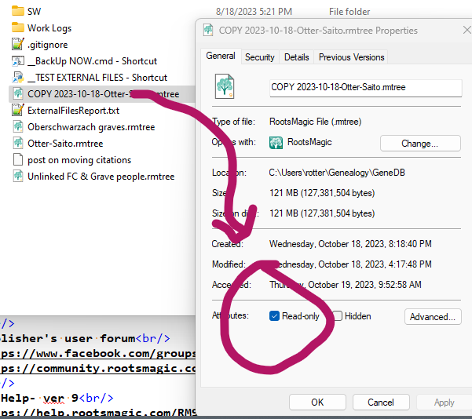

Home
RootsMagic Tips and Tricks
Applies to RootsMagic v9 software, published by RootsMagic, Inc. RootsMagic website
This page updated: 2023-10-25
1- Thesaurus
Database items are sometimes referenced by different names in different contexts
Here is a list of items that may be confusing.
Thesaurus
2- Sort date
Commonly misunderstood feature.
 The top circled field is the "normal date", the bottom one is the Sort Date.
The Sort Date is used to sort:
The top circled field is the "normal date", the bottom one is the Sort Date.
The Sort Date is used to sort:
- Facts in the fact list
- Currently not used for Persons (offspring) in lists of a family's children by birth sort date
- Currently not used for Persons (spouses) in lists of a person's spouses by marriage sort date (??)
It is never displayed in reports.
Only used for sorting items in the RM display and in reports (??).
The sort date is, by default, set to the same value as the normal date (except for qualitative date modifiers)
The sort date may be set to any desired value.
3- Sorting multiple facts on the sane day
Dates in RM are are not TimeStamps and are limited to calendar dates. No clock time value is allowed.
When more than one event occurs on the same calendar day and the order of the events is known, use the dashed sort date feature.
For a clear explanation, see- RM v9 help: Date formats, last section: Sorting events on the same date
Quick example-
The normal date values for the events may all be the same, but the sort date for each event would modified by adding -1, -2 -3 etc
For example, if four events happened on May 1, 1950, the sort dates are all by default, the same as the normal date: 1 May 1950.
Change the sort dates to:
1 May 1950-1
1 May 1950-2
1 May 1950-3
1 May 1950-4
The corresponding facts will be sorted accordingly.
Note that the character entered by the user is the standard hyphen "-", but it is changed to an en-dash "–" when displayed. (Similar to how RM handles date ranges)
For info on dashes and hyphens, see Em Dash (—) vs. En Dash (–)
4- Advanced Search primary field values
The Advanced Search feature in RM sets up a query using the user interface -
 The first field, at first glance, appears to be a list of all the fact types used in the database, standard and user created. However, there are a number of items in the list that aren't facts.
The first field, at first glance, appears to be a list of all the fact types used in the database, standard and user created. However, there are a number of items in the list that aren't facts.
They are listed her for reference.
Non-fact type items in the data (all that are not a specific fact)
Given name(s)
Given (or Nickname)
Surname
Surname (Birth or Marr)
Prefix
Suffix
Nickname
Any Fact
Date edited
FamilySearch ID
Living flag
Number of children
Number of sets of parents
Number of siblings
Number of spouses
Record number
Sex
Source (family)
Source (general)
5- Advanced Search options listing
see
Advanced Search options
6- Adding media files to RM after download by browser
These instructions are for the current version (2023-10) of Chrome. Probably similar for Edge.
When a file is downloaded in Chrome, after the file save dialog, a small pop up window appears near the upper right corner of the browser window.
If one has the RM "Media=>Add Media=>Drop New Media" "drag and drop target" displayed, one can drag the small pop-up window onto the RM drop target to add the downloaded file to RM media.
This window disappears as soon as any action other than dragging is taken, like switching windows, clicking in the browser etc. So if the RM drop target is not already visible on the screen, the window will vanish before you can set it up. No worries- instead, set up the RM drop target, position the window so it will be visible when the focus is switched to the browser, and then in the browser, click the "downloads" button. This will display a list of recent downloaded files. You can drag the listed file that you want to the RM drop target.

This illustrates the dragging of a file listed in the downloads list to the RM Drop Media Target area.
7- Opening a second instance of the same database
RM is not designed to do this. In fact it is designed to prevent this. SQLite has no problem with multiple processes accessing the same file, Database writes are serialized by using file locking.
There are easy workarounds to RM's prohibition to opening the same file twice but one will encounter numerous "file locked" error messages. I have not seen any problems caused by this, but it does not inspire confidence.
A simple and robust alternate method is to take a recent copy of the database file, rename it to something like "COPY YYYY-MM-DD.rmtree" and change its properties to Read Only. (Right click the file in Windows File Manager and select Properties.)

Then when you want to see a part of the database that is inaccessible, one can open this Read Only "COPY" database in the same instance of RM. It won't be current, but for many situations, that will be OK
You won't be able to make accidental changes to the Read Only database, so your modifications will always go to the correct open file.

Unfortunately, a modal window, citation entry, for example, will still prevent you from interacting with the other database's windows. You'll need a real second instance of RM to overcome that. But perhaps the COPY database window can be arranged on the screen to be visible while working in the modal window.
8- Online resources for RootsMagic
From the Publisher
Main website
https://www.rootsmagic.com/
Publisher's user forum
https://www.facebook.com/groups/RootsMagicUsers
https://community.rootsmagic.com/
RM Help- ver 9
https://help.rootsmagic.com/RM9/index.html
RM Help- ver 8
http://wiki.rootsmagic.com/wiki/RootsMagic_8:RootsMagic_8
Independent Sites
Users forum
https://rootsmagic-users.groups.io
Premier site for discussion of RootsMagic direct SQL access
https://sqlitetoolsforrootsmagic.com/
Reddit
https://www.reddit.com/r/RootsMagic/
9- Confirm that a downloaded installer is uncorrupted
One often sees posts in forums that users, when they are having software problems, have suspicions that the downloaded installer they are using is somehow corrupted.
This can easily be ruled out by checking the installer file's digital signature. If the signature is OK, one can be assured that the file contents are OK, or at least they have been unchanged since creation by the publisher.
To check an installer's digital signature-
Find the installer file in Windows File Manager
Right click the installer exe file and select Properties from the end of the menu.

Click the Digital Signatures tab in the Properties window.
Select the sha256 item in the list and click the Details button.

Examine the Digital Signatures Details window and look for "Digital Signature OK".
10- Consider using Git version control to track external files
External file names and locations are tracked by RootsMagic, but the files' contents are not.
Git for Windows
Pro-
All changes to external file names and locations can be reviewed and confirmed.
Another back up of your data.
Deletion of files or unexpected modification is made apparent.
It's free and you will learn something if you don't already use Git.
Con-
Git is designed to be used with text files. Most media files in RM are binary. However, it still works great.
Git does not preserve the file system time stamps for files.
11- TODO
13- TODO
12- TODO